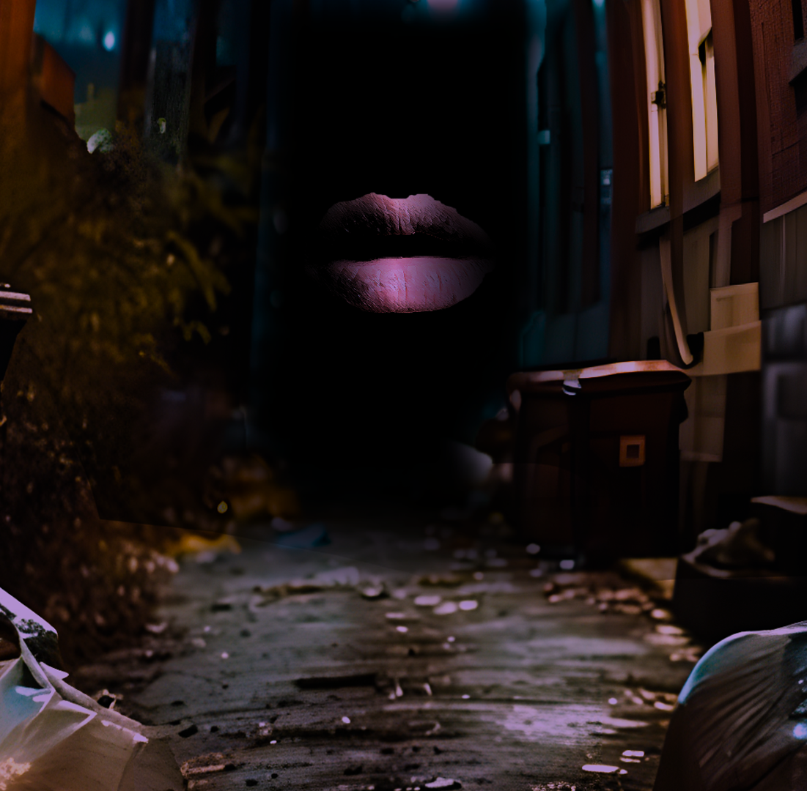

The boy had alabaster skin, with a sleek jawline lacking any facial hair, indicating a lack of maturity. The body’s hair was unnaturally white and cloudlike, with several bangs threatening to reach his eyes and stunt his vision.
Then his eyes.
If his hair wasn’t an indicator, his eyes truly hinted at something inhuman.
They glowed with a white incandescence, almost with the brightness of a lightbulb.
To avoid drawing attention to himself, the masculine being shut his eyes tight and put effort into reducing the glow to be more mild, which he was able to achieve after regulating the flow of energy across his optic nerves.
Having controlled his appearance to seem as inconspicuous as he could achieve, the boy slowly strutted past several dumpsters as he slowly approached the opening which would allow him a clearer view. However, as he almost stepped on the sidewalk, freeing himself from the embrace of the darkness of the decrepit alley, the darkness seemed to speak back to him, and it was cold in its address, with a slight hint of amusement.
“With all your effort to seem less noticeable, it might all be in vain if you decide to go out with literally nothing, don’t you think?”
